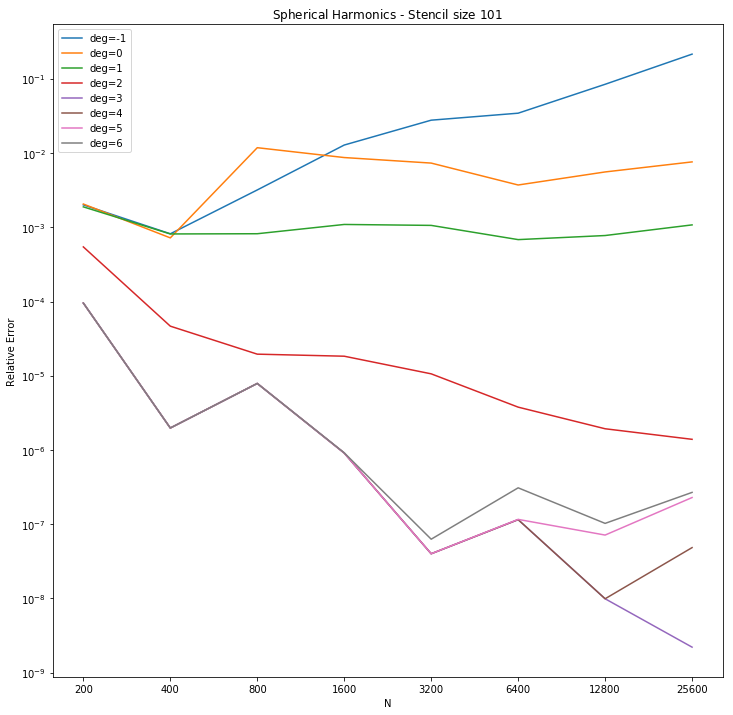
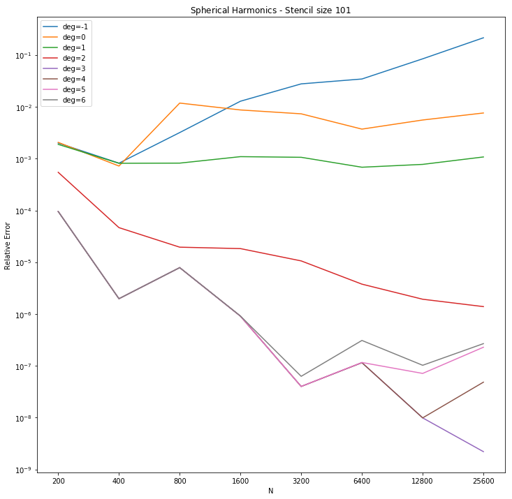

Assessed the results of augementing the stencil matrices with spherical harmonics and discussed more experiments. Debuged Daniel's upwinding code for 1-D advection.
- Tasks
- Daniel
- Sage
- Augmenting with Spherical Harmonics
- References
The next meeting is scheduled for on August 30st at 10 am.
Tasks
Daniel
- Modify code to have a variable wave speed.
Sage
- Research sphereical harmonics.
- Test RBF-FD code for steady state laplacian on $\SS^2$ varying the choice of rbf, the stencil size, and the point-sets.
- Test the effect that scaling vs non-scaling has for the polynomial terms.
- Research the Skeel Condition Number[1].
- Learn and implement the RBF-OGr method.
Augmenting with Spherical Harmonics
The spherical harmonics are a subset of the polynomials that are linearly independent on the surface of the sphere. By augmenting the RBF stencil matrix with spherical harmonic terms we can increase the degree beyond linear terms without making the matrix singular. As before we require more points in the stencil than terms in the basis. Below is the convergence plot using $\phi(r)=r^3$ augmented with the spherical harmonics up to the specified degree for stencil sizes $31$ and $101$.
 

We noticed that degrees higher than 3 began to do poorly by comparison. Varun suspects that this is due to the choice of RBF and that higher degree PHS RBFs may not suffer from this loss of accuracy. In these results, the spherical harmonic terms were not centered and scaled, which may also improve accuracy.
References
- Nicholas J. Higham. Accuracy and Stability of Numerical Algorithms. University of Manchester, 2002. URL: https://epubs.siam.org/doi/abs/10.1137/1.9780898718027.fm, arXiv:https://epubs.siam.org/doi/pdf/10.1137/1.9780898718027.fm, doi:10.1137/1.9780898718027.fm.